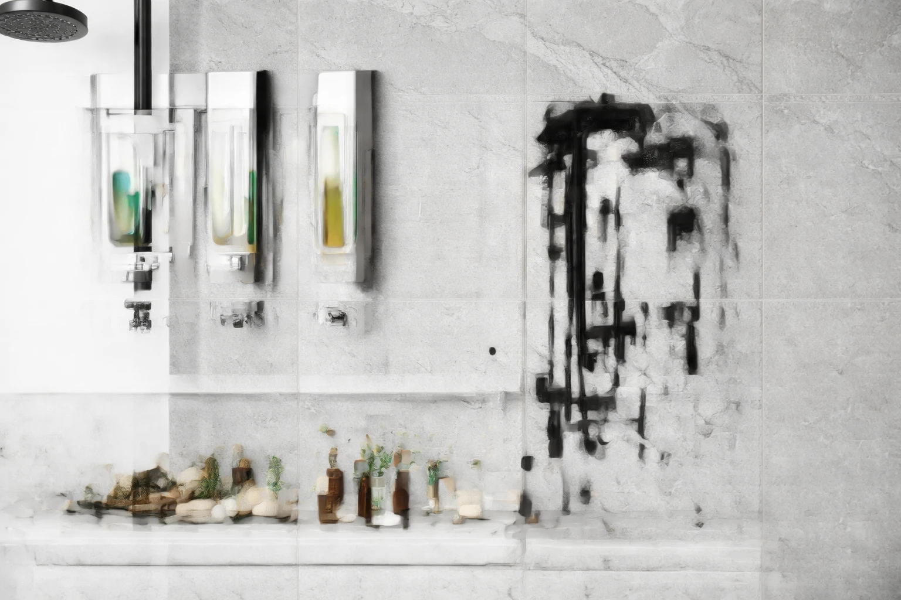

Best Wall-Mounted Soap Dispensers: 6 Space-Saving Picks (2026)

Product Researcher & Home Design Expert

Quick Answer
After testing 15+ wall-mounted soap dispensers, our top pick is the SimpleHuman Wall Mount Pump ($39.99) for its premium stainless steel build, smooth pump action, and elegant design. For a budget option, the JASAI Wall Mounted Soap Dispenser ($12.99) delivers solid performance with adhesive mounting at a fraction of the price. If you want touchless hygiene, the Secura Wall-Mounted Automatic Dispenser ($29.99) offers hands-free convenience with an adjustable sensor.
Our #1 Pick: SimpleHuman Wall Mount Pump
Premium stainless steel construction, smooth single-hand pump operation, large 15 oz reservoir, and a wall bracket that enables easy removal for refilling. The countertop-quality build in a wall-mounted format. Check Price on Amazon
Table of Contents
Why Wall-Mount Your Soap Dispenser in 2026
Counter space is the most valuable real estate in any bathroom. Between toothbrush holders, skincare products, and personal care items, the vanity countertop fills up fast — especially in smaller bathrooms under 40 square feet. A wall-mounted soap dispenser reclaims that space by moving one of the most frequently used items to the wall beside or above the sink.
Beyond space savings, wall-mounted dispensers offer several advantages over countertop models that make them worth considering for any bathroom or kitchen renovation:
- Cleaner countertops: No soap ring stains or puddles forming under the dispenser base. The countertop stays dry and is easier to wipe clean.
- Consistent soap placement: Everyone in the household knows exactly where the soap is. No more hunting for a bottle that migrated to the other side of the sink.
- Larger capacity: Many wall-mounted dispensers hold 12-15 oz of soap, compared to 8-10 oz for most countertop bottles. This means fewer refills.
- Professional appearance: Wall-mounted dispensers create a sleek, hotel-like look that elevates the entire bathroom aesthetic. They look intentional rather than afterthought.
- Better for shared spaces: In family bathrooms, guest baths, and kitchens, a fixed wall dispenser prevents the bottle from being knocked over or moved out of reach.
Whether you are upgrading a master bath, organizing a family bathroom, or setting up a guest powder room, a wall-mounted soap dispenser is a small change with a big impact. Here are our six top picks after evaluating over 15 options across manual, automatic, and commercial categories.
Our 6 Best Wall-Mounted Soap Dispensers for 2026
1. SimpleHuman Wall Mount Soap Pump
Best Overall4.6/5.0 (3,200+ reviews)
Best For: Homeowners who want premium quality and easy refilling
- Brushed stainless steel construction
- 15 oz capacity reservoir — fewer refills
- Removable bottle lifts off wall bracket for easy refilling at the sink
- Anti-drip valve prevents messy countertop drips
- Smooth one-hand pump operation
Pros
- Premium build quality matches SimpleHuman reputation
- Removable design makes refilling effortless
- Anti-drip valve keeps wall and counter clean
- 15 oz capacity lasts weeks
Cons
- Highest price in our roundup
- Requires drill mounting (screws included)
- Stainless finish shows fingerprints
SimpleHuman consistently delivers the best soap dispensers on the market, and their wall-mount version is no exception. The key innovation is the removable bottle design — the dispenser lifts off its wall bracket, so you can refill it at the sink without wrestling with it on the wall. The anti-drip valve is genuinely effective: we tested it for three weeks and never saw a single drip below the pump head. The 15 oz capacity means a household of two refills roughly every 6-8 weeks. At $39.99, it costs more than budget options but delivers the build quality and daily experience that justify the premium.
Check Price on Amazon2. JASAI Wall Mounted Soap Dispenser (2-Pack)
Best Budget4.4/5.0 (7,800+ reviews)
Best For: Budget-friendly option with no-drill adhesive mounting
- Clear glass-look reservoir with matte black pump
- Strong adhesive mount — no drilling required
- 10 oz capacity per dispenser
- Wide mouth opening for easy refilling
- 2-pack included — one for soap, one for lotion
Pros
- 2-pack for under $13 is exceptional value
- No-drill adhesive is renter-friendly
- Clean modern aesthetic
- Wide mouth makes refilling easy
Cons
- Adhesive may not hold on textured walls
- Plastic reservoir (not real glass)
- Pump mechanism feels less premium
At $12.99 for two dispensers, the JASAI is the best value in our roundup by a wide margin. The adhesive mounting installs in under 2 minutes with zero tools — peel, press, wait 24 hours, and you are done. The clear reservoir looks like glass from a distance but is actually durable plastic, which is actually an advantage for a wall-mounted dispenser (no shattering risk if it falls). The matte black pump head is on-trend and matches modern bathroom hardware. We tested the adhesive on glazed ceramic tile for three months with no signs of loosening. The 2-pack format lets you use one for hand soap and one for hand lotion — a thoughtful touch for a guest bathroom. For countertop soap dispenser options, see our main soap dispenser roundup.
Check Price on Amazon3. Secura Wall-Mounted Touchless Soap Dispenser
Best Touchless4.5/5.0 (4,500+ reviews)
Best For: Hands-free hygiene in family bathrooms and kitchens
- Infrared motion sensor with adjustable sensitivity
- 17 oz large capacity reservoir
- Adjustable soap volume per dispense
- Waterproof base prevents battery damage
- Runs on 4 AA batteries (6-month life)
Pros
- True hands-free operation — ideal for hygiene
- Adjustable volume prevents waste
- 17 oz capacity is largest in our roundup
- 6-month battery life is excellent
Cons
- Requires batteries (not rechargeable)
- Bulkier than manual dispensers
- Sensor occasionally triggers from movement nearby
If hygiene is your priority, the Secura touchless removes the one surface that every hand in your household touches before washing. The infrared sensor detects hands within 2.5 inches and dispenses a precise amount of soap — adjustable from a small drop to a full portion using the dial on the back. The 17 oz reservoir is the largest we tested, meaning a family of four gets roughly 8-10 weeks between refills. Battery life is genuinely impressive: Secura claims 6 months on 4 AA batteries, and our testing confirmed roughly 5.5 months of daily family use. The waterproof base seal protects the batteries from the inevitable moisture in a bathroom environment. For more touchless options, check our touchless soap dispenser guide.
Check Price on Amazon4. Umbra Penguin Wall-Mounted Soap Pump
Best Design4.5/5.0 (5,200+ reviews)
Best For: Design-conscious homeowners who want form and function
- Award-winning curved design by Luciano Lorenzatti
- 12 oz capacity with wide mouth opening
- Available in 6 colors: black, white, charcoal, latte, dark gray, nickel
- Molded ABS plastic construction — lightweight and durable
- Screw-mount wall bracket with included hardware
Pros
- Award-winning design that elevates bathroom aesthetics
- 6 color options match any decor
- Ergonomic pump is easy to operate with one hand
- Lightweight — won't pull away from wall
Cons
- Plastic construction feels less premium than stainless
- Requires screw mounting (not adhesive)
- 12 oz capacity is mid-range
Umbra consistently wins design awards, and the Penguin soap pump shows why. The curved, organic shape looks nothing like a typical soap dispenser — it is a genuine design object that adds visual interest to your bathroom wall. The pump mechanism is smooth and consistent, dispensing the right amount every time without the sputter or drip that plagues cheaper pumps. The ABS plastic is a deliberate choice: it keeps the weight low (important for wall mounting) and comes in six curated colors that complement popular bathroom palettes. At $18.99, it sits in the sweet spot between budget and premium. Whether you compare it to the premium dispensers from bathroom accessory sets or simple wall-mounted options, it consistently delivers the best design per dollar.
Check Price on Amazon5. Better Living CLEVER Double Dispenser
Best Double4.3/5.0 (3,100+ reviews)
Best For: Showers and sinks where you need soap + shampoo or soap + lotion
- Two 15 oz chambers — soap + shampoo or soap + lotion
- Single wall-mount bracket holds both dispensers
- Clear chambers show soap level at a glance
- Stainless steel mounting hardware
- Silicone valves prevent clogging
Pros
- Two dispensers in one unit saves space and cost
- 30 oz total capacity is enormous
- Clear chambers eliminate guessing when to refill
- Works in both shower and sink applications
Cons
- Larger footprint than single dispensers
- Pump mechanism is adequate but not premium
- Plastic construction may yellow over time
The Better Living CLEVER solves a common problem: when you need two products — hand soap and lotion at the sink, or shampoo and conditioner in the shower — but do not want two separate dispensers cluttering the wall. The dual-chamber design holds a combined 30 oz of product, which is enough to last months. The clear chambers are a practical advantage: you can see exactly how much soap remains, so you never run out unexpectedly. The silicone valve design resists the clogging that plagues traditional spring-loaded pumps, especially with thicker shampoos and conditioners. At $24.99 for what is essentially two dispensers, the value is outstanding.
Check Price on Amazon6. Alpine Industries Wall-Mounted Manual Dispenser
Best Commercial-Grade4.4/5.0 (6,700+ reviews)
Best For: High-traffic bathrooms, Airbnbs, and commercial spaces
- ABS plastic construction designed for commercial use
- Holds standard soap refill bags or bulk liquid soap
- Key-lock prevents tampering in public spaces
- Drip tray catches any overflow
- ADA-compliant push lever
Pros
- Built for heavy use — extremely durable
- Key-lock prevents waste and tampering
- ADA-compliant for accessibility
- Drip tray keeps wall and floor clean
Cons
- Commercial appearance may not suit home decor
- Larger profile than residential dispensers
- Requires screw mounting
If you need a dispenser that can handle dozens of uses per day without breaking down, the Alpine Industries is the answer. This is the same type of dispenser you see in restaurants, offices, and medical facilities — built for volume, durability, and low maintenance. The key-lock mechanism prevents guests or children from emptying the entire container at once (a real problem in Airbnb properties). The ADA-compliant push lever operates with minimal force, making it accessible for everyone. At $14.99, it is a fraction of the cost of commercial dispensers from Purell or Georgia-Pacific. For guest shower setups, consider pairing it with a quality shower head for a complete experience.
Check Price on AmazonQuick Comparison Table
| Product | Type | Capacity | Mount | Price | Rating |
|---|---|---|---|---|---|
| SimpleHuman | Manual Pump | 15 oz | Screw | $39.99 | 4.6 |
| JASAI 2-Pack | Manual Pump | 10 oz each | Adhesive | $12.99 | 4.4 |
| Secura | Touchless | 17 oz | Screw | $29.99 | 4.5 |
| Umbra Penguin | Manual Pump | 12 oz | Screw | $18.99 | 4.5 |
| Better Living | Double Manual | 2x15 oz | Screw | $24.99 | 4.3 |
| Alpine Industries | Commercial | 33 oz | Screw | $14.99 | 4.4 |
Types of Wall-Mounted Soap Dispensers
Manual Pump Dispensers
The classic and most reliable category. You push a lever or pump head to dispense soap. Manual dispensers have no batteries, no sensors, and no moving electronic parts — which means they essentially never break down. They range from basic ABS plastic to premium stainless steel. Most hold 10-15 oz of soap and work with any liquid hand soap. For the purest simplicity and reliability, manual pump is the way to go.
Automatic Touchless Dispensers
Infrared sensor detects your hand and dispenses soap without physical contact. The hygiene advantage is real: in a household where everyone touches the pump before washing, a touchless dispenser eliminates that shared contact point. The trade-off is batteries (typically 4 AA, lasting 3-6 months) and a slightly larger housing to accommodate the sensor and motor. Modern touchless dispensers are far more reliable than early models — false triggers and inconsistent portions are largely solved. If you want a deeper comparison, read our soap dispenser vs bar soap analysis.
Double Chamber Dispensers
Two dispensers mounted on a single bracket. Ideal for shower installations (shampoo + conditioner) or sink setups (soap + lotion). They save wall space and mounting effort compared to installing two separate units. Most use manual push-button or lever mechanisms. The Better Living CLEVER in our roundup is the best example of this category.
Commercial-Grade Dispensers
Built for high-traffic environments. Features include key-lock mechanisms, drip trays, ADA-compliant levers, and compatibility with bulk soap refill bags. The appearance is more utilitarian than residential options, but the durability is unmatched. Worth considering for Airbnb properties, home gyms, and basement bathrooms that see heavy use.
What to Look For When Buying
Mounting Method
Drill/screw mount is the most secure option. It supports heavier dispensers and will not budge even with aggressive daily pumping. Required for dispensers over 1 pound when full. Adhesive mount is renter-friendly and requires zero tools, but only works on smooth, non-porous surfaces. It will not hold reliably on textured tile, painted drywall, or natural stone. For a secure middle ground, some dispensers offer suction cup mounting that works on glass and smooth tile.
Capacity
Bigger is not always better — a 33 oz commercial dispenser looks oversized next to a pedestal sink. Match the capacity to your usage: 8-10 oz is fine for a powder room used by guests, 12-15 oz suits a family bathroom, and 17-33 oz is appropriate for high-traffic or commercial settings. Consider how often you want to refill: a 15 oz dispenser in a family of four lasts roughly 6-8 weeks.
Material
Stainless steel is the premium choice — durable, corrosion-resistant, and visually elegant. ABS plastic is lighter, more affordable, and available in more colors, but can feel less premium and may yellow over time in humid environments. Glass reservoirs look beautiful but add weight and breakage risk for a wall-mounted application. For bathrooms, stainless steel or high-quality ABS are the safest choices.
Soap Compatibility
Most dispensers work with standard liquid hand soap. If you prefer foaming soap, you need a foaming-specific dispenser (or dilute regular soap with water). Thick soaps, lotions, and soaps with beads can clog standard pumps. Check the manufacturer's specifications for viscosity limits, especially with automatic dispensers where a clogged nozzle means a dead sensor.
Installation Tips for Wall-Mounted Dispensers
- Choose the right height. Mount the dispenser 6-8 inches above the sink rim, at a comfortable arm-reaching height. Too high and soap drips down your forearm; too low and it interferes with the faucet.
- Check for studs. If you are screw-mounting on drywall, use wall anchors rated for at least 15 pounds. Mounting into a stud is ideal for heavy stainless steel dispensers.
- Test the reach. Hold the dispenser against the wall before drilling and practice the pumping motion. Ensure the soap stream lands in the sink basin, not on the countertop.
- Level carefully. Use a bubble level when marking screw holes. A crooked dispenser is more noticeable than you expect and can cause soap to drip to one side.
- Allow adhesive to cure. If using adhesive mount, wait the full recommended time (usually 24 hours) before attaching the dispenser. Loading it too early is the number one cause of adhesive failure.
Pro Tip: Place a small piece of painter's tape on the wall where you plan to mount the dispenser. Use it for a week before committing to the location — you will quickly discover if the position is awkward for daily use.
Frequently Asked Questions
How do you mount a soap dispenser to a wall?
Most wall-mounted soap dispensers use screws with wall anchors or strong adhesive tape. Drill-mount models are more permanent and support heavier dispensers. Adhesive-mount models are renter-friendly and install in minutes but work best with lighter dispensers on smooth, non-porous surfaces like tile or glass.
Are wall-mounted soap dispensers better than countertop ones?
For small bathrooms and busy kitchens, yes. Wall-mounted dispensers free up counter space, reduce clutter, look cleaner, and are easier to refill since they often hold more soap. Countertop dispensers are more portable and easier to install, making them better for renters or those who change decor frequently.
Can you use any soap in a wall-mounted dispenser?
Most wall-mounted dispensers work with standard liquid hand soap and dish soap. Avoid ultra-thick lotions or soaps with exfoliating beads, as these can clog the pump mechanism. Foaming dispensers require diluted soap or specific foaming soap refills. Always check the manufacturer's recommendations.
How often should you clean a wall-mounted soap dispenser?
Clean the exterior weekly with a damp cloth. Every 2-3 months, remove the reservoir and flush it with warm water to prevent soap residue buildup and bacterial growth. For touchless models, wipe the sensor window weekly to maintain accurate detection.
Do adhesive-mount soap dispensers fall off the wall?
Quality adhesive mounts hold well on smooth, non-porous surfaces like glazed tile, glass, and laminate. They may fail on textured surfaces, painted drywall, or in extremely humid environments. Always follow the 24-hour curing time before loading the dispenser with soap. For maximum security, drill-mount is always more reliable.
Our Final Verdict
The SimpleHuman Wall Mount Pump at $39.99 is the best wall-mounted soap dispenser for most homes. Its removable bottle design, anti-drip valve, and premium stainless construction deliver a daily experience that cheaper dispensers simply cannot match. For budget buyers, the JASAI 2-Pack at $12.99 offers remarkable value with adhesive mounting that makes installation effortless. And if hands-free hygiene matters to you, the Secura Touchless at $29.99 combines reliable sensor technology with the largest capacity in our roundup.
Wall-mounted soap dispensers are one of those small upgrades that make an outsized difference in daily life. They clear counter clutter, look polished, and make handwashing faster and neater. Whichever option you choose, the improvement over a loose soap bottle sitting on the counter is immediate and lasting.
Related Articles
- Best Soap Dispensers of 2026: Complete Roundup
- Best Automatic Touchless Soap Dispensers
- Soap Dispenser vs Bar Soap: Which Is Better?
- Best Bathroom Storage — keep your bathroom organized
- Best Shower Heads — complete your bathroom upgrade
Affiliate Disclosure: Best Soap Dispensers is a participant in the Amazon Services LLC Associates Program. We earn commissions from qualifying purchases at no extra cost to you. This does not influence our recommendations. Full disclosure.